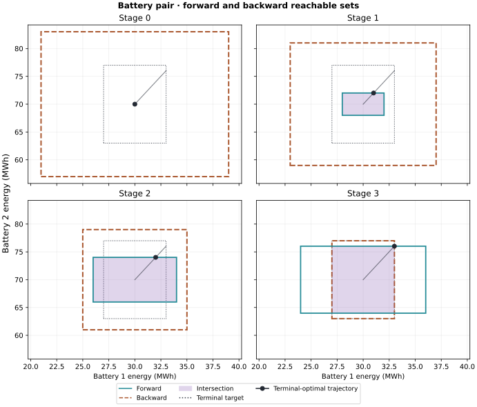

Backward reachability across 35 catalogue models
Ask which states can reach a terminal target in the remaining steps. A rational C++ producer and an independent checker certify 1,120 sampled support values across 35 discrete models.

Define the predecessor problem
Use the archived affine update xj+1 = Axj + Buj + gj, where gj includes the fixed nominal forecast. The authored control box is [−1, 1]m at every step. The zero-control history cj starts at the archived initial state. The terminal target is the box centred at c3 with half-width ri = max(1, |c3,i|)/10 in coordinate i.
The backward set at stage k contains every state that can reach this target using the remaining control intervals. This authored profile keeps the affine dynamics, fixed forecast, signed control intervals and terminal target. The earlier matched experiments carry the source state, stage and budget constraints.
Match an upper bound to a witness
Embed a sampled direction d in the two plotted coordinates and set qk = d. Solve ATqj+1 = qj successively. All 35 transition matrices are nonsingular when interpreted as exact stored binary64 values.
The bound for the support at stage k is dTck + ∑i ri|q3,i| + ∑j=k2 ‖BTqj+1‖1. The target box yields the first sum. Each signed control box yields a term in the second sum.
The C++ producer chooses a maximizing point on the target box and maximizing controls, then solves backward for the witness state. The checker verifies the transpose equations, replays each witness forward, and checks that it reaches the target. The feasible witness objective equals the upper bound exactly for all eight sampled directions at every stage of each model. A seeded change to a support value fails the check.
Read the battery trajectory
The battery starts at (30, 70) MWh and has target [27, 33] × [63, 77] MWh. Each control acts on only one battery, so the forward and backward sets have independent coordinate intervals. Intersect those intervals at each stage. The upper corner of the terminal intersection maximizes x1 + x2. The plotted trajectory reaches (33, 76.021) MWh after three steps, with values rounded for display.
Reproduce the sweep
Extract the evidence archive and follow RUN.txt to compile the C++ producer with GMP 6.3.0 and nlohmann/json 3.11.3. Regenerate the 35 certificate files, run the independent checker, and rebuild the figure.